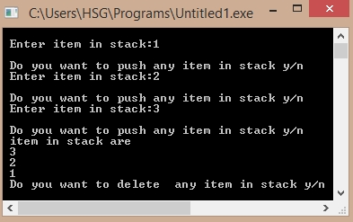

/*C Program to implement Stack using LinkedList*/
#include<stdio.h>
#include<conio.h>
#include<malloc.h>
struct node
{
int item;
struct node *next;
};
struct node *top;
void push()
{
int n;
struct node *pt;
pt=(struct node*)malloc(sizeof(struct node));
printf("\n Enter item in stack:");
scanf("%d",&n);
pt->item=n;
pt->next=0;
if(top==0)
{
top=pt;
}
else
{
pt->next=top;
top=pt;
}
}
void pop()
{
int item;
struct node *ptr;
if(top==0)
{
printf("\n Stack is empty");
}
else
{
item=top->item;
ptr=top;
printf("\n item popped is=%d", item);
top=top->next;
free(ptr);
}
}
void display()
{
struct node *ptr;
printf("\n item in stack are");
for(ptr=top; ptr!=0; ptr=ptr->next)
printf("\n %d", ptr->item);
}
void main()
{
char ch,ch1;
ch ='y';
ch1='y';
top=0;
while(ch!='n')
{
push();
printf("\n Do you want to push any item in stack y/n");
ch=getch();
}
display();
while(ch1!='n')
{
printf("\n Do you want to delete any item in stack y/n");
ch1=getch();
pop();
}
display();
getch();
}
Output:
